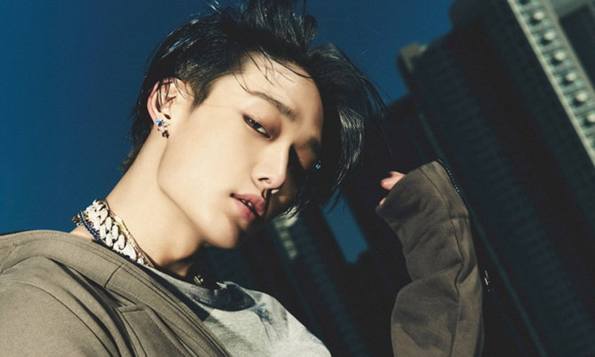
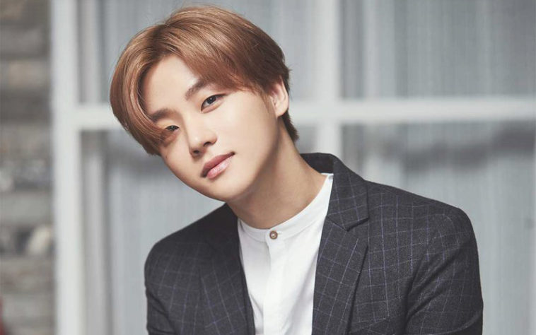
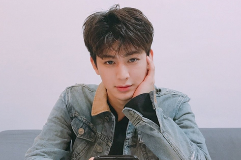
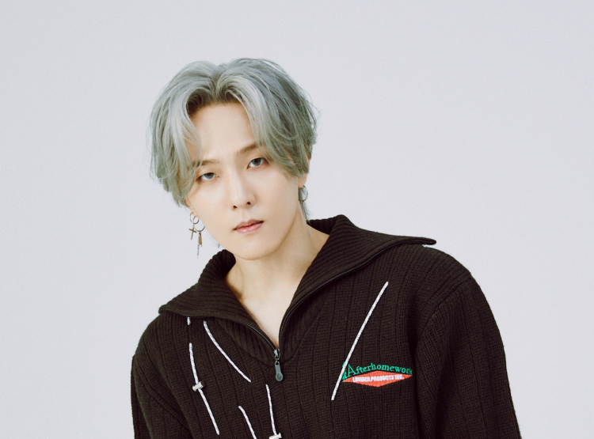
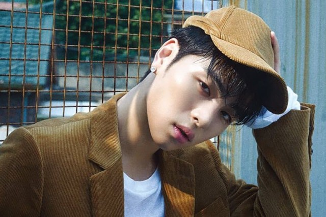
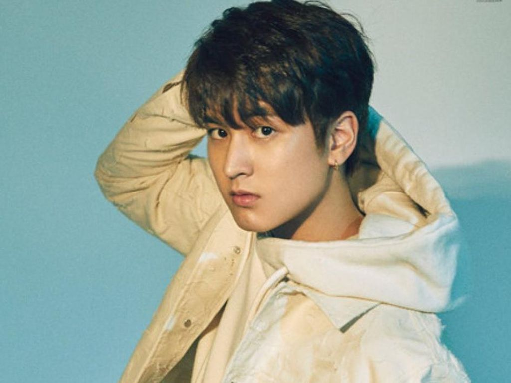

IKON
iKON (Hangul: 아이콘) iKON atau ||¦||¦¦ (dalam bentuk logo), adalah grup idola pria asal korea selatan
yang dibentuk pada tahun 2015 oleh YG Entertainment dan beranggotakan enam orang. Grup ini pertama kali
diperkenalkan dalam acara realitas WIN: Who is Next sebagai "Tim B". Setelah itu, Tim B muncul kembali
dalam acara realitas survival berjudul Mix & Match.
Anggota
Berikut ini adalah Nama-nama member ikon:
- Bobby/Kim Ji wo
- Kim ji Hwan
- Yun Hyeong
- Kim Dong Hyuk
- Koo Ju Ne
- Jung Chan Woo






Sejarah
Sebelum debut sebagai IKON, mereka harus mengikuti dua kali acara survival, yaitu WIN: Who Is Nex dan
Mix & Match. Pada tahun 2013,B.I,Bobby,Jinhwan,Ju-ne,Donghyuk, dan Yunhyeong berkompetisi sebagai Tim B
diacara survival WIN.
Tim mereka kalah dari Tim A dan gagal debut pada saat itu. Ditahun berikutnya, Tim B kembali berkompetisis
di acara Mix & Match dengan tujuh anggota untuk menentukan line-up terakhir grup IKON.
Sebelumnya, B.I, Bobby, dan Jinhwan telah dikonfirmasi sebagai member IKON dan member Tim B lain bersaing
dengan tiga trainee baru.Di episode final, formasi terakhir berisi tiga anggota Tim B yang tersisa dengan
tambahan Chanwoo.